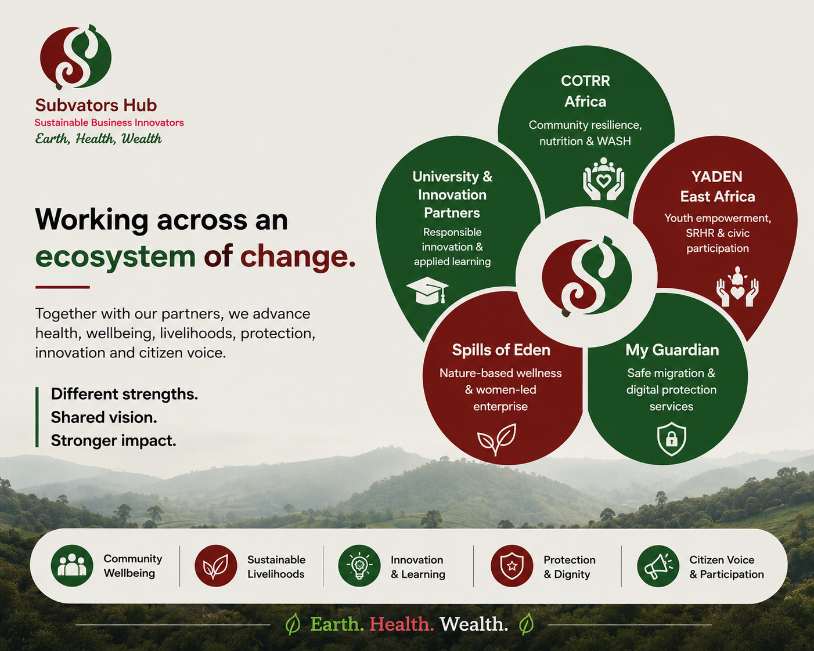
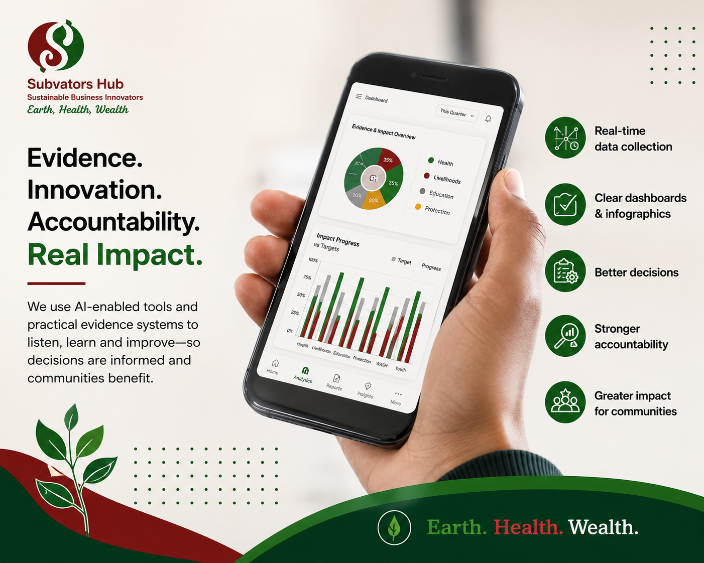
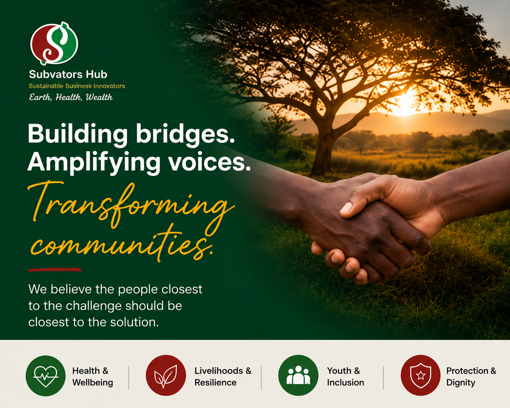
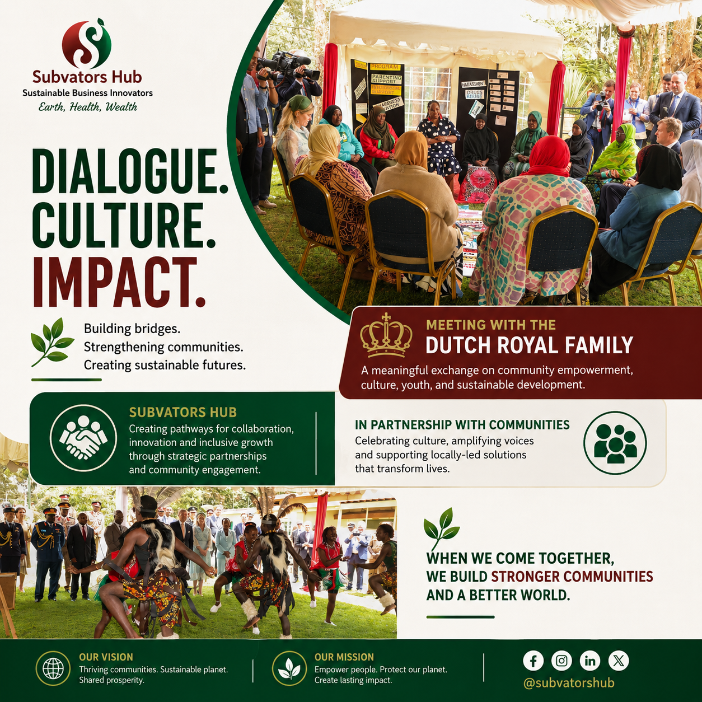
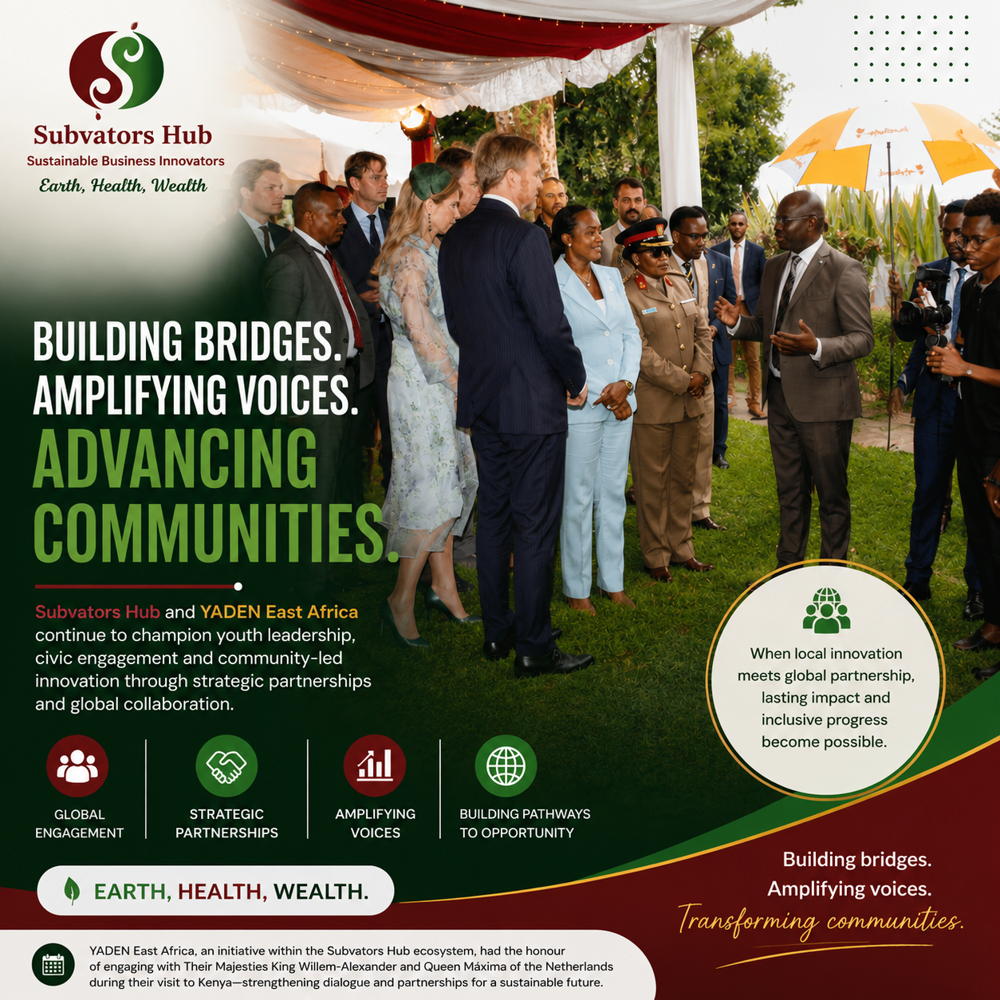

Observe
Field evidence and community realities. We listen to local actors, identify practical community priorities and surface the evidence that institutions often miss.
Kenya-based grassroots innovation organisation
Subvators Hub turns field evidence, local innovators and partner coalitions into fundable health, wealth and Earth systems.


.jpeg)
Organisation overview
Subvators Hub is a Kenya-based catalytic organisation dedicated to amplifying grassroots voices and influencing socio-economic reform through practical innovation. We work as a bridge between communities, policymakers, strategic partners, donors and global actors so locally led solutions can shape wider systems change.
Our work places health and wellbeing at the centre: better nutrition, safer environments, stronger household resilience, women's participation, youth opportunity and community-rooted protection pathways.
Subvators Hub makes grassroots innovation visible, credible and fundable.
Operating layer
Subvators works across the practical steps that turn local promise into partner-ready action. The Hub does not replace local leadership. It strengthens the systems around it.
Why this work matters
Kenya continues to face socio-economic barriers that directly affect health and wellbeing. Youth unemployment constrains stable livelihoods. Gender inequality limits women's full participation in economic and public life. Weak citizen engagement often leaves grassroots groups outside reforms that shape food systems, public health, safety and opportunity.
At community level, these pressures show up in poor diets, unsafe migration, inadequate sanitation, environmental stress, weak referral systems and limited institutional capacity among community-rooted actors.
Field evidence and community realities. We listen to local actors, identify practical community priorities and surface the evidence that institutions often miss.
Institutional development. We support governance, finance, compliance, fundraising readiness and organisational positioning so grassroots partners can grow with confidence.
Concepts, decks and donor readiness. We help translate local ideas into clear collaboration models, donor concepts, budgets, narratives and partner-ready cases.
Strategic partnerships. We connect community-rooted organisations with donors, universities, policymakers, diaspora networks and global actors.
Evidence-led learning and reform. We support research, dashboards, workflow tools and feedback loops that help partners improve decisions and demonstrate impact.
What Subvators builds
Designing collaboration models, donor positioning and concepts that place nutrition, wellbeing, sanitation, safety and inclusive livelihoods at the core.
Supporting governance, finance, compliance, fundraising readiness and organisational positioning so grassroots partners can grow with confidence.
Linking community evidence, citizen voice and practical reform conversations so local realities influence policy and practice.
Applying AI-supported learning, dashboards, workflow tools and light automation to strengthen coordination, evidence use and decision support.
Connecting local innovators, women-led enterprise, youth leadership and community knowledge to healthier outcomes and wider influence.
Partner ledger
The Subvators ecosystem brings together local delivery, youth mobilisation, wellness enterprise, digital protection and value-chain innovation. Each partner adds a different strength to a shared vision: stronger health, livelihoods, protection, citizen voice and Earth-centred resilience.
COTRR Africa is a Kenya-based grassroots organisation that works directly with communities and families to strengthen resilience, inclusive livelihoods and local support systems.
Its practice spans climate-smart agriculture, food security, community health promotion, water and sanitation access, and outreach to vulnerable groups. Within the Subvators ecosystem, COTRR Africa is especially important as a field implementation and mobilisation partner that can translate community priorities into practical health, hygiene, nutrition and household resilience results.
YADEN East Africa equips young people to lead change through civic engagement, enterprise support, research and community-centred programming.
Its contribution is particularly strong where youth leadership intersects with health and protection: adolescent wellbeing, gender equality, sexual and reproductive health awareness, behaviour-change communication and socially grounded innovation. This makes YADEN a valuable partner for programmes that require trusted youth mobilisation alongside wellbeing and prevention outcomes.
Spills of Eden brings a distinctive health and wellness dimension to the Subvators network.
Through herbal products, natural wellness experiences, restorative spaces and women-linked value chains, it connects enterprise development with preventive health, healing, nutrition culture and community wellbeing. Its model is especially relevant for programmes that want to combine local enterprise, indigenous knowledge, women's economic participation and holistic health promotion.
My Guardian is a digital safety and support platform serving migrant workers, families, travellers and other users through location-based emergency support, messaging, translation and user-centred digital services.
Its relevance to Subvators lies in the health-protection interface: safe migration pathways, crisis response, psychosocial support, healthcare access for abused migrants, and practical protection tools for people at risk. It brings a strong digital and transnational protection layer to a predominantly community-rooted ecosystem.
Carledorian brings an enterprise and value-chain dimension to the Subvators ecosystem through BarakaBlend coffee and wider African products, including tea, herbs, spices and natural honey.
Its coffee work links Ugandan highland production with regional and Europe-facing markets, while its wider innovation platform connects business services, food and meat processing, and cakes and pastry skills training. This strengthens practical pathways for agribusiness, skills development, women and youth enterprise, diaspora trade and responsible cross-border value chains.
Evidence layer
Evidence objects connect the organisation's claims to actual partner activity, field materials and strategic support work. Make technology secondary to mission.

.jpeg)
Evidence stories

Subvators Hub and YADEN East Africa continue to champion youth leadership, civic engagement and community-led innovation through strategic partnerships and global engagement.

Subvators developed strategic partnership support for Kilifi Wellness Centre and continues to advise implementation alongside Spills of Eden.

Carledorian connects African products, food systems, farm enterprise and practical skills development to livelihood and value-chain opportunities.
Confirm event dates, image rights, royal-family wording, partner names and profile portraits before turning draft evidence modules into final public case studies.
Founder and people
Lucy Den Teuling founded Subvators Hub from a belief that communities already hold the solutions to many of their own challenges. Her work focuses on building bridges between grassroots innovators and the partnerships, resources, visibility and opportunities needed to create lasting impact.
The people closest to the challenge should be closest to the solution.
Strategic advisory
Subvators helps partners translate community priorities into practical collaboration designs. This includes fundraising readiness, innovation hubs, university linkages, North-South collaboration, action-policy research and responsible AI integration.
The goal is to keep institutional priorities connected to community health, inclusion and applied learning. Subvators can help shape the concept, organise the evidence and connect the right coalition around locally led change.